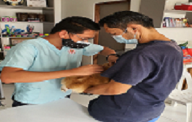

Atención Médica
En nuestra veterinaria ofrecemos diferentes servicios donde van desde consultas,
asesorías sobre el cuidado de las mascotas, medicina preventiva, como es que
llevamos acabo los procesos quirúrgicos, lo cual abarca vacunas y
desparasitaciones, y todo lo relacionado con el cuidado dental.

Procesos Quirúrgicos
Todos los procedimientos quirúrgicos, ya sean procedimientos menores (suturar una
herida, por ejemplo),procedimientos mayores como esterilizar una perra, operar un
estomago, hígado, intestino, o corregir una fractura de tu mascota. Y también hay una
serie de preparaciones previas, por si estas complicaciones surgieran de imprevisto.

Chip de Rastreo
La forma en que funcionan realmente los microchips se debe al código único de 15
dígitos que se registra en una base de datos nacional junto con tus datos,
incluidos tu nombre y el de tu perro, dirección y número de teléfono de emergencia.

Desparasitantes
La pastilla de desparasitación o, como comúnmente se las denomina, la pastilla
antipulgas y garrapatas para perros, ataca y elimina a los Parásitos que entran
en contacto con el animal. Estos comprimidos actúan con un principio activo
axofolaner y furalaner, etc., pertenecientes a la familia de las isoxazolinas.